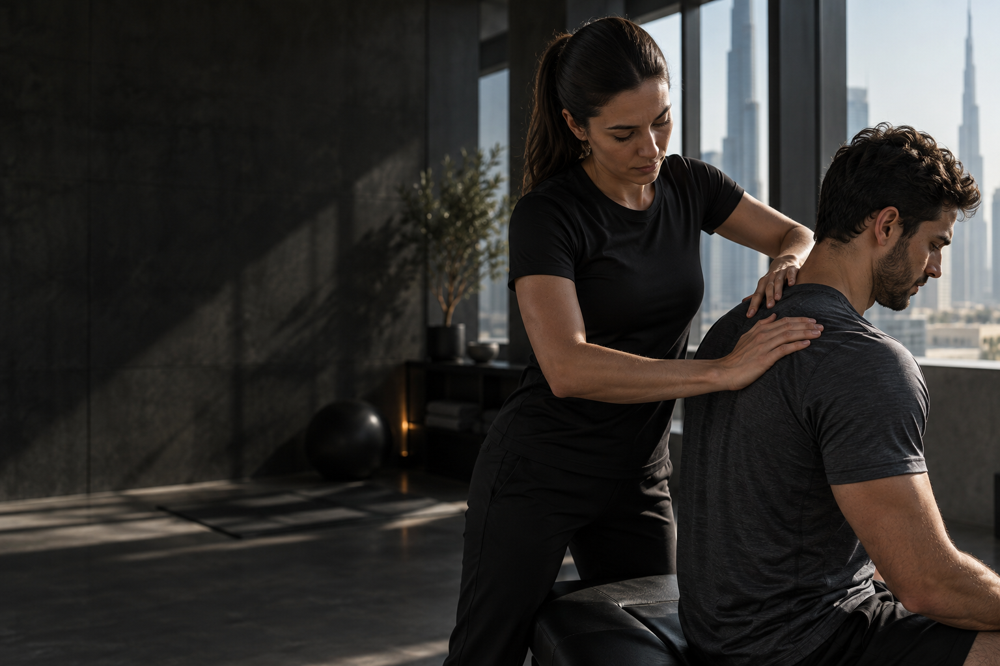
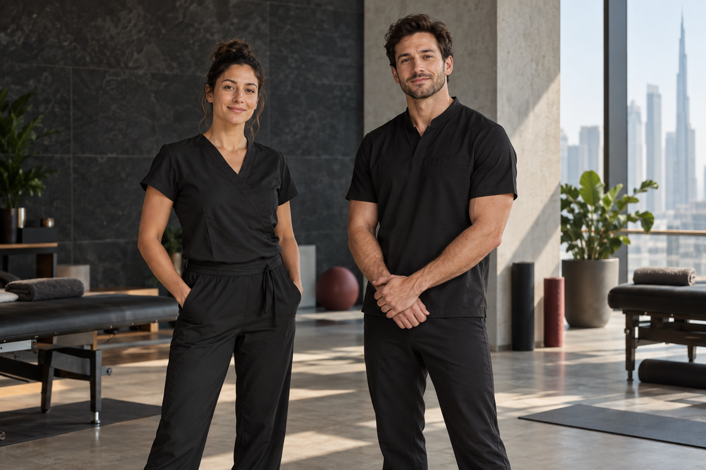
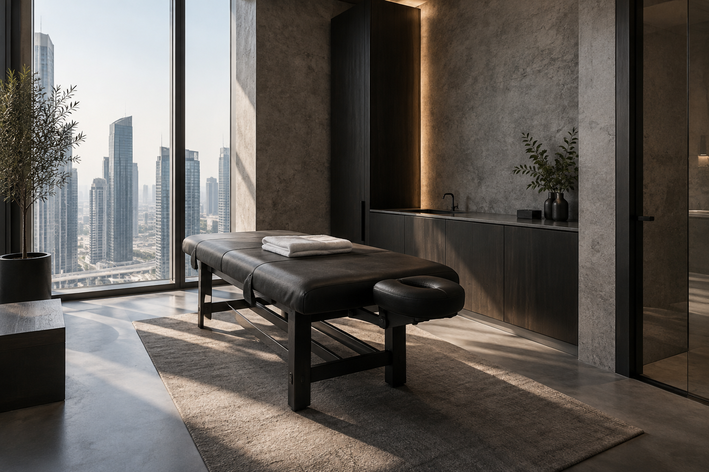
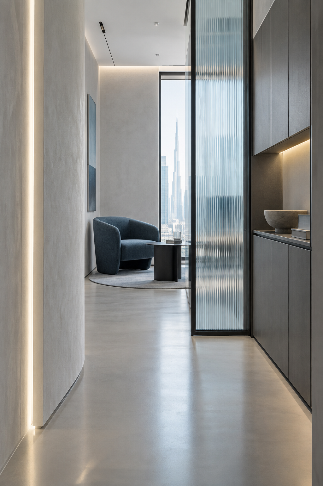

Массаж спины
Работа с напряжением, которое мешает двигаться свободно.
↗
Точное прикосновение. Осмысленная работа с телом. Сеанс, после которого легче двигаться дальше.

Работа с напряжением, которое мешает двигаться свободно.
↗Восстановление после нагрузки с учётом вашего ритма.
↗Глубокая пауза, чтобы вернуть телу ощущение лёгкости.
↗У каждого тела — своя история движения. Мы начинаем с разговора, выбираем подход под ваш запрос и работаем в комфортном для вас темпе.
THE BODY MECHANIC / ПЕРСОНАЛЬНЫЙ ПОДХОДВнимание к вашему состоянию до начала работы.
Знание анатомии и точный выбор техники.
Пространство и время, чтобы почувствовать результат.
За каждой техникой стоит специалист, который видит в вас человека, а не набор симптомов.
THE BODY MECHANIC / DUBAI
Демонстрационные образы. Состав команды и данные специалистов уточняются.
«Я почувствовал, что моё тело действительно услышали. Движение снова стало лёгким».
Пример оформления отзыва. В финальной версии здесь будет подтверждённый отзыв клиента.
Ритм города остаётся снаружи. Внутри — приватность, ясный свет и внимание к деталям, которые помогают переключиться на себя.


Интерьеры иллюстрируют визуальное направление и не подтверждают фактический вид студии.
Первый сеанс начинается с ясности. Собрали ответы на то, что важно знать заранее.
Расскажите, что вас беспокоит и какой результат вы ожидаете. Мы поможем выбрать направление.
Специальная подготовка не нужна. Приходите немного раньше, чтобы спокойно обсудить ваше состояние.
Продолжительность зависит от выбранной программы. Мы уточним детали при записи.
Свяжитесь с нами заранее, и мы предложим другое доступное время.
Оставьте контакты и пару деталей. Мы свяжемся с вами, уточним запрос и подберём удобное время.
DUBAI, UAE · PRIVATE BODYWORK